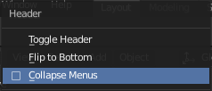
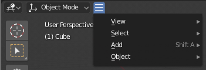

Menus¶
Blender uses a variety of different menus for accessing options and tools. Selecting menus can be interacted with in the following ways:
- Mouse selection
-
LMB on the desired item.
- Numerical selection
-
You can use the number keys or numpad to input an item in the list to select. For example, Numpad1 will select the first item and so on.
If the menu content is too large to fit on the screen, small menu scrolling indicator triangle appears on bottom or top of menu. Scrolling is done by moving the mouse below or above the scrolling indicator.
Shortcuts
-
Use Wheel while hovering with the mouse.
-
Arrow keys can be used to navigate.
-
Each menu item has an underlined character which can be pressed to activate it.
-
Number keys or numpad can be used to access menu items. (Where 1 is the first menu item, 2 the second, etc. For larger menus Alt-1 the 11th… up to Alt-0 the 20th.)
-
Press Return to activate the selected menu item.
-
Press Esc to cancel the menu, or move the mouse cursor far from the pop-up, or by LMB clicking anywhere out of it.
Header Menus¶
Image menu in the Header of the Image editor.¶
Most headers exhibit a set of menus, located at the start of the header. Header menus are used to configure the editor and access tools. All menu entries show the relevant shortcut keys, if any.
Collapsing Menus¶
Sometimes it’s helpful to gain some extra horizontal space in the header by collapsing menus. This can be accessed from the header context menu, click RMB on the header and select Collapse Menus.
|

Right-click on any of the header menus.¶ |

Access the menu from the collapsed icon.¶ |
Select Menus¶
The 3D Viewport Mode Select menu.¶
The Select menu (short selector) lets you choose between a set of options. Select menu appears as an icon and/or text with down arrow on the right side of the button. The menu options are shown with LMB click on the button. The selected option is then shown as active on the menu button.
Popover Menus¶
The Transform Orientations pop-up menu.¶
Popover menus are overlays. Like Select Menus, pop-up menus also include down arrow on the right side of menu button. However, pop-up menus allow more content to be shown, such as title, list options, buttons, sliders, etc. Popover menus group controls into a menu, which is automatically hidden when mouse pointer leaves menu boundaries (including a margin).
Context Menu¶
Context menus are pop-ups opened with the Menu key for editors and RMB for properties. Context menu contents depend on the location of the mouse pointer.
When invoked in an editor the menu contains a list of operators sensitive to the editor’s mode. Or when invoked over buttons and properties common options include:
- Single
-
Set or get single value.
- All
-
Include all combinations.
- Reset All/Single to Default Value(s)
-
Replaces the current value by the default (keyboard shortcut Backspace).
- Unset
-
TODO.
- Copy Data Path
-
Copies the Python property Data path, relative to the data-block. Useful for Python scripting.
- Copy As New Driver
-
Creates a new driver using this property as input, and copies it to the clipboard. Use Paste Driver to add the driver to a different property, or Paste Driver Variables to extend an existing driver with a new input variable.
- Copy To Selected
-
Copies the property value to the selected object’s corresponding property. A use case is if the Properties editor context is pinned.
- Assign Shortcut
-
Lets you define a keyboard or mouse shortcut for an operation. To define the shortcut you must first move the mouse cursor over the button that pops up, and when “Press a key” appears you must press and/or click the desired shortcut. Press Esc to cancel.
- Change Shortcut
-
Lets you redefine the shortcut.
- Remove Shortcut
-
Unlinks the existing shortcut.
- Online Manual
-
Opens an online page of Blender Manual in a web browser.
- Online Python Reference
-
Context-sensitive access to the Python API Reference.
- Edit Source
-
For UI development – Creates a text data-block with the source code associated with the control, in case the control is based on a Python script. In the Text Editor it points at the code line where the element is defined.
- Edit Translation
-
For UI development – Points at the translation code line.
See also
Specials Menu¶
The Specials pop-up menu contains a context-sensitive list of operators. It is opened by a button with a down arrow on dark background .
Pie Menus¶
A pie menu is a menu whose items are spread radially around the mouse.
The 3D Viewport Mode Pie menu.¶
Interaction¶
The pie menu is spawned by a key press, which are listed in the add-on’s documentation.
Tip
Fastest way to operate a Pie menu is to press down key(s) that invoke the menu, then move mouse slightly towards a selection, and release key(s) to activate the selection.
Releasing the key without moving the mouse will keep the menu open and the user can then move the mouse pointer towards the direction of a pie menu item and select it by clicking. Releasing the key, after moving the mouse towards a pie menu item, will cause the menu to close and the selected menu item to activate.
An open disc widget at the center of the pie menu shows the current direction of the pie menu. The selected item is also highlighted. A pie menu will only have a valid direction for item selection, if the mouse is touching or extending beyond the disc widget at the center of the menu.
Pie menu items support key accelerators, which are the letters underlined on each menu item. Also number keys can be used to select the items.
If there are sub-pies available, it is indicated by a plus icon.
See Pie menu settings.